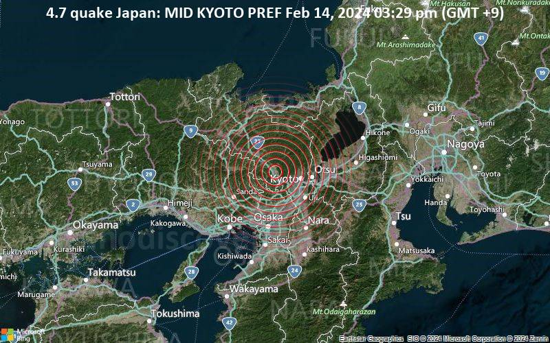
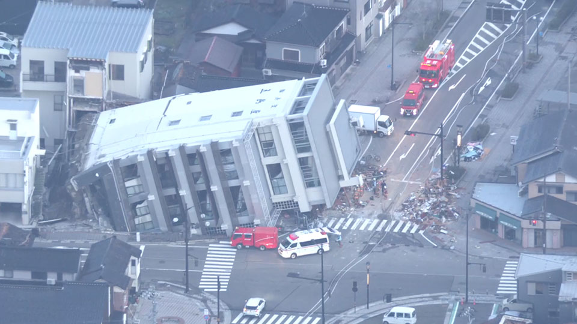

Come Aiutare le Popolazioni Colpite
I disastri naturali, come i terremoti, lasciano dietro di sé devastazione e bisogno urgente di supporto. Tuttavia, ognuno di noi può fare la differenza con azioni concrete, anche da lontano.
- Donazioni finanziarie: Offrire un contributo economico a enti affidabili consente di fornire beni di prima necessità come acqua, cibo e medicine.
- Volontariato: Partecipare a iniziative di supporto, assistenza logistica o supporto psicologico alle vittime.
- Raccolte locali: Organizzare punti di raccolta per vestiti, coperte, beni igienici o scolastici da spedire nelle zone colpite.
- Promozione dell’informazione: Condividere notizie verificate e aggiornamenti utili per mantenere viva l’attenzione pubblica.
- Sostegno a lungo termine: Finanziare progetti di ricostruzione, istruzione e salute nelle comunità colpite anche anni dopo il sisma.
La solidarietà non si misura solo nell'emergenza, ma soprattutto nella ricostruzione lenta e difficile che segue.

Soluzioni per il Futuro
Per ridurre l’impatto dei terremoti è fondamentale unire scienza, educazione e pianificazione. Le tecnologie moderne, insieme alla consapevolezza collettiva, permettono di affrontare questi eventi in modo più preparato e resiliente.
- Costruzioni antisismiche avanzate: Progettare edifici capaci di assorbire l’energia del sisma con materiali flessibili e fondazioni intelligenti.
- Allerta precoce: Sistemi basati su reti sismiche e satelliti che avvisano in anticipo la popolazione con SMS, sirene e messaggi pubblici.
- Educazione nelle scuole: Insegnare ai bambini fin da piccoli come comportarsi durante un terremoto può salvare molte vite.
- Piani di evacuazione aggiornati: Ogni città dovrebbe avere un piano chiaro, visibile e facilmente accessibile in caso di emergenza.
- Collaborazione tra Stati: La condivisione di esperienze, risorse e tecnologie tra Paesi è essenziale per affrontare eventi globali con più efficacia.
Ogni tragedia offre anche una lezione: quella di costruire un futuro più sicuro e più giusto per tutti.
